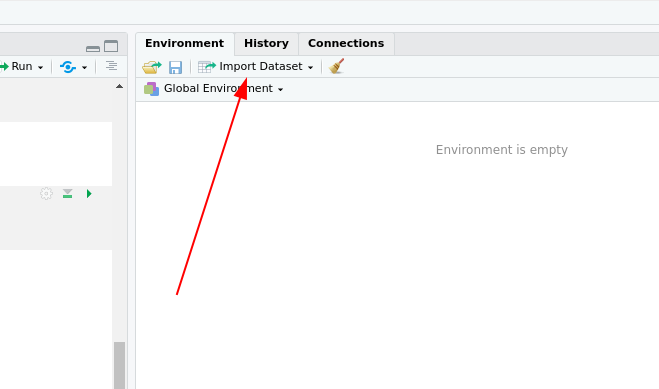
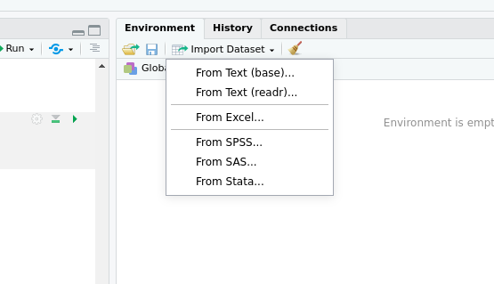
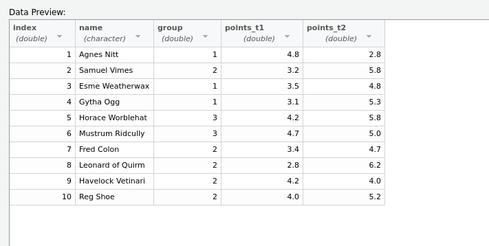
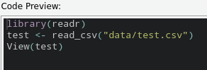

Faktoren und Aggregation
Faktoren
Gruppierungsfaktoren
Mit der Klasse factor können die Eigenschaften kategorialer Variablen abgebildet werden. Sie wird insbesondere für Gruppierungsfaktoren im versuchsplanerischen Sinn verwendet und kann bei statistischen Auswertung und Darstellungen hiflreich sein.
Eine Möglichkeit, ein Objekt der Klasse factor zu erstellen, ist die factor()-Funktion.
Die Stufen eines ungeordneten Faktors haben keine hierarchische Ordnung - Beispiel “Geschlecht”:
sex <- c("m", "f", "f", "m", "m", "m", "f", "f")
class(sex)## [1] "character"sexFac <- factor(sex)
class(sexFac)## [1] "factor"sexFac ## [1] m f f m m m f f
## Levels: f mEbenso funktioniert dies mit numerischen Faktorstufen.
factor(c(1, 1, 3, 3, 4, 4))## [1] 1 1 3 3 4 4
## Levels: 1 3 4factor() bietet außerdem die Möglichkeit, nicht im Ursprungsvektor definierte Faktorstufen zu definieren:
numericfactor <- factor(c(1, 1, 3, 3, 4, 4), levels=1:5)
numericfactor## [1] 1 1 3 3 4 4
## Levels: 1 2 3 4 5Mit Faktorstufen arbeiten
## 0=Mann, 1=Frau
(sexNum <- sample(0:1, 30,T)) ## [1] 1 0 0 0 0 1 1 0 0 1 1 1 0 0 0 1 1 1 1 0 1 1 0 0 0
## [26] 1 1 1 0 0sexFac <- factor(sexNum, labels=c("male", "female"))
sexFac## [1] female male male male male female female
## [8] male male female female female male male
## [15] male female female female female male female
## [22] female male male male female female female
## [29] male male
## Levels: male female## ausgeben, wie häufig welche Stufe vorkommt
summary(sexFac)## male female
## 15 15## die Struktur des Faktors ausgeben
str(sexFac) ## Factor w/ 2 levels "male","female": 2 1 1 1 1 2 2 1 1 2 ...Achtung: Die Struktur des Faktors ist immer numerisch von 1 aufsteigend (auch wenn es ursprünglich “0” und “1” waren, s.o.).
ändern von Faktorstufen
Das tidyverse bietet einen netten Wrapper um Faktoren umzuwandeln.
Zuerst wandeln wir die Stufen unseres sexFac in andere labels um:
library(tidyverse)
recode_factor(sexFac,
male = 'männlich',
female = 'weiblich')## [1] weiblich männlich männlich männlich männlich
## [6] weiblich weiblich männlich männlich weiblich
## [11] weiblich weiblich männlich männlich männlich
## [16] weiblich weiblich weiblich weiblich männlich
## [21] weiblich weiblich männlich männlich männlich
## [26] weiblich weiblich weiblich männlich männlich
## Levels: männlich weiblichWas aber im Zweifel noch praktischer sein kann, ist unnötige Stufen zusammenzufassen:
numericfactor## [1] 1 1 3 3 4 4
## Levels: 1 2 3 4 5recode_factor(numericfactor,
'1' = 'one',
'2' = 'two',
'3' = 'three',
.default = 'rest')## [1] one one three three rest rest
## Levels: one two three restQuantitative in kategoriale Variablen umwandeln
Für Median-Splits und ähnliches ist es sehr praktisch, direkt numerische Variablen in nach Grenzen eingeteilte Faktoren umzuwandeln. Dabei ist Variante 1 die schon bekannte ifelse-Funktion:
a_numeric_variable <- sample(1:100, 100, T)
factor(ifelse(a_numeric_variable > median(a_numeric_variable),
'high',
'low'))## [1] high low high low high low low low low
## [10] high low high high high high low high low
## [19] high low high low low high high low low
## [28] low high high high low high high low low
## [37] high high low high high high high high high
## [46] low high low low high low high low high
## [55] low low low low low high high low low
## [64] high high high low high low high low low
## [73] low high low low low low low low high
## [82] low low low high low high low high high
## [91] low low high high low high high high low
## [100] high
## Levels: high lowWenn mehr als 2 Gruppen gewünscht sind, hilft die cut-Funktion
IQ-Werte in 3 Klassen einteilen:
IQ <- sample(80:120, 100, T)
## Intervalle: [0;85], (85;115], (115;inf]
IQfac <- cut(IQ, breaks=c(0, 85, 115, Inf),
labels=c("lo", "mid", "hi"))
summary(IQfac)## lo mid hi
## 14 78 8cut kann man außerdem ganz einfach zusammen mit der quantile-Funktion benutzen um beliebige Perzentil-Splits durchzuführen:
quantSplit <- cut(IQ,
breaks=c(-Inf,
quantile(IQ,
probs=c(0.25,
0.5,
0.75)),
Inf))
summary(quantSplit)## (-Inf,89.8] (89.8,100] (100,110] (110, Inf]
## 25 26 24 25Daten einlesen I
csv
Die nächste Veranstaltung wird sich nochmal umfassen mit dem Einlesen und Abspeichern von Datensätzen beschäftigen, um ein bisschen flexibler bei den Übungsaufgaben zu sein, führen wir hier aber schon mal eine Funktion aus dem readr-Paket (natürlich Teil des tidyverse) ein; die read_csv-Funktion. .csv-files sind eine weit verbreitete Art und Weise, tabellarische Daten abzuspeichern.
Der einfachste Weg, solche files einzulesen, führt über die RStudio-GUI:

Hier im Beispiel hab ich jetzt die Datei test.csv ausgewählt, die ein Beispiel aus der letzten Vorlesung enthält:

Was mir den den folgenden Code-Schnipsel liefert, den ich dann in mein Skript kopieren kann:

test <- read_csv("data/test.csv")Für’s Erste soll uns das an Einlese-Strategien reichen.
deskriptive Kennwerte
Einfache deskriptiv-statistische Kennwerte
Wir hatten in der zweiten Veranstaltung ja schon ein paar deskriptive Kennwerte, die wollen wir jetzt auf Datensätze anwenden.
Wir könnten uns beispielsweise fragen, was der Mittelwert der beiden Punkte pro Testzeitpunkt war.
Dafür können wir die pull-Funktion nutzen, um uns einfache Spalten des Datensatzes als Vektor ausgeben zu lassen:
test %>%
pull(points_t1) %>%
mean()
test %>%
pull(points_t2) %>%
mean()## [1] 3.79
## [1] 4.96Das funktioniert zwar, wird aber umständlicher, je mehr Spalten und Kennwerte wir berechnen wollen.
Natürlich gibt es tidyverse auch dafür Funktionen, die uns die Arbeit leichter machen. Mit der summarise-Funktion können wir ähnlich wie mit der mutate-Funktion Variablen definieren, die dann aber Zusammenfassungen über angegebene Funktionen sind:
test %>%
summarise(m_t1 = mean(points_t1),
sd_t1 = sd(points_t1),
m_t2 = mean(points_t2),
sd_t2 = sd(points_t2),)## # A tibble: 1 × 4
## m_t1 sd_t1 m_t2 sd_t2
## <dbl> <dbl> <dbl> <dbl>
## 1 3.79 0.689 4.96 0.989Das ist ja schon ganz nett, aber diese Infos sind selten hilfreich. In unserem Datensatz sind Experimentalgruppen eingeteilt, eigentlich wollen wir unsere Mittelwerte pro Gruppe ausrechnen. Mit der group_by-Funktion ist das auch ganz einfach möglich.
In unsere pipe von eben bauen wir dazu einfach einen kurzen group_by-Aufruf ein und schon sind wir beim erwünschten Ergebnis:
test %>%
group_by(group) %>%
summarise(m_t1 = mean(points_t1),
sd_t1 = sd(points_t1),
m_t2 = mean(points_t2),
sd_t2 = sd(points_t2))## # A tibble: 3 × 5
## group m_t1 sd_t1 m_t2 sd_t2
## <dbl> <dbl> <dbl> <dbl> <dbl>
## 1 1 3.8 0.889 4.3 1.32
## 2 2 3.52 0.576 5.18 0.873
## 3 3 4.45 0.354 5.4 0.566Und diese Gruppierungen können wir jetzt einfach mit dem vorhin gesehenen cut zur Gruppierung kombinieren.
So könnten wir uns zum Beispiel fragen, wie die Mittelwerte und Streuungen in den Quartilen aussehen. Dafür können wir einfach ein mutate vorschalten, indem wir die Verbesserung zum zweiten Termin und einen Quartilsplit einführen, den wir dann direkt zum Gruppieren benutzen:
test <- test %>%
mutate(improvement = points_t2 - points_t1,
quart_split = cut(improvement,
breaks = c(-Inf,
quantile(improvement,
probs = c(.25,.5,.75)),
Inf),
right = T,
labels = c('q1', 'q2', 'q3', 'q4')
)
)
test %>%
group_by(quart_split) %>%
summarise(m_t1 = mean(points_t1),
sd_t1 = sd(points_t1),
m_t2 = mean(points_t2),
sd_t2 = sd(points_t2))## # A tibble: 4 × 5
## quart_split m_t1 sd_t1 m_t2 sd_t2
## <fct> <dbl> <dbl> <dbl> <dbl>
## 1 q1 4.57 0.321 3.93 1.10
## 2 q2 3.75 0.354 5 0.283
## 3 q3 3.8 0.566 5.25 0.778
## 4 q4 3.03 0.208 5.77 0.451Häufigkeitsauszählungen
Diese pipe können wir auch verwenden, um uns Häufigkeiten von Bedingungskombinationen anzugucken. Dafür tauschen wir einfach die summarise- durch die count-Funktion aus und schon ist der Output eine Tabelle mit den absoluten Häufigkeiten:
test %>%
group_by(quart_split) %>%
count()## # A tibble: 4 × 2
## # Groups: quart_split [4]
## quart_split n
## <fct> <int>
## 1 q1 3
## 2 q2 2
## 3 q3 2
## 4 q4 3Die group_by-Funktion kann dabei auch mehrere Argumente verstehen, wir können also auch nach Gruppe und Quantilen auszählen:
test %>%
group_by(quart_split,group) %>%
count()## # A tibble: 9 × 3
## # Groups: quart_split, group [9]
## quart_split group n
## <fct> <dbl> <int>
## 1 q1 1 1
## 2 q1 2 1
## 3 q1 3 1
## 4 q2 1 1
## 5 q2 2 1
## 6 q3 2 1
## 7 q3 3 1
## 8 q4 1 1
## 9 q4 2 2